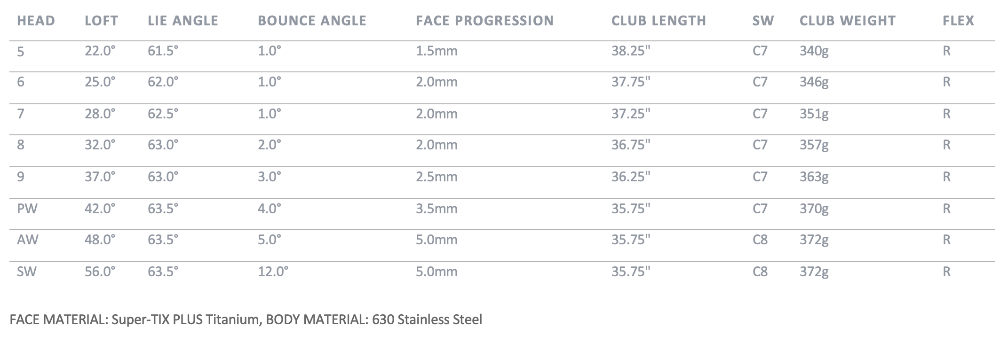

XXIO PRIME IRONS
With premium titanium faces and our new Twin Groove design, XXIO Prime Irons provide higher ball speed and launch for the seasoned player.
Luxury is Light
Designed to help seasoned golfers with moderate swing speeds achieve straight ball flight with enhanced distance, the XXIO Prime is the gold standard in luxury performance.
Performance
- Easy swing feel
- Added distance
- Straight flight
Features
- Luxury head materials
- Exceptional forgiveness
- Lightweight, high balance point construction
TECHNOLOGY
Weight Plus
Weight Plus is a counterbalancing technology that places weights in the end of each shaft, located behind your hands as you grip the club. That grip weight helps push the club head up through your backswing for a more consistent top of swing position. And as you begin the downswing, the weight brings your hands into position, keeping your arms closer to your body for a squarer face at impact.
Super-TIX PLUS Titanium Face
Each XXIO Prime Driver, Fairway Wood, and Iron face is made from Super-TIX PLUS Titanium, an incredibly strong yet lightweight alloy that adds speed to all your shots.
Twin Groove
Behind each iron face is Twin Groove, a unique structure with two interior slots that increase ball speed on low-face strikes. This technology, combined with the irons’ Super-TIX PLUS Titanium face, offers a 110% larger sweet spot than previous generations for added speed, consistency and distance in your iron game.
Step Sole
A stepped sole feature reduces contact area on the trailing edge of each iron sole, smoothing turf interaction for more consistent contact from any lie.
Lightweight Construction
The new XXIO Prime SP-1100 Shaft, with TORAYCA T1100G carbon fiber and NANOALLOY resin, is extremely lightweight to help produce more swing speed and distance with its smooth, easy-to-swing profile. The softer tip section also makes it easier to close the club face and strike the ball square.
XXIO PRIME IRONS Specs
XXIO PRIME 7/ PW Graphite IRONS PRICE
1 399 € / 1 549 CHF / 14 699 SEK / 1 249 £
XXIO PRIME single iron Graphite PRICE
349 € / 389 CHF / 3 675 SEK / 315 £